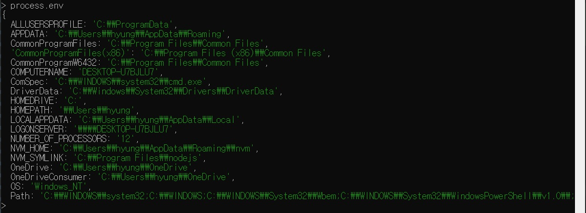

REPL에 process.env를 입력하면 매우 많은 정보가 출력됩니다.
자세히 보면 이 정보들이 시스템의 환경 변수임을 알 수 있습니다.
process.env는 서비스의 중요한 키를 저장하는 공간으로도 사용됩니다.
서버나 데이터베이스의 비밀번호와 각종 API 키를 코드에 직접 입력하는 것은 위험합니다.
혹여 서비스가 해킹당해 코드가 유출되었을 때 비밀번호가 코드에 남아 있어 추가 피해가 발생할 수 있습니다.
따라서 중요한 비밀번호는 다음과 같이 process.env 의 속성으로 대체합니다.
const secretId = process.env.SECRET_ID;
const secretCode = process.env.SECRET_CODE;
이제 process.env에 직접 SECRET_ID와 SECRET_CODE를 넣어주면 됩니다.
넣는 방법은 운영체제마다 차이가 있습니다.
하지만 한 번에 모든 운영체제에 동일하게 넣을 수 있는 방법이 있습니다.
9장에서 dotenv를 사용할 때 배웁니다.